directory = 'data/house_price.csv'실습에 필요한 데이터 파일 다운로드
기본 import
import matplotlib.pyplot as plt
import pandas as pd
import numpy as np구글 코랩 (Colab) 한글 폰트 깨짐현상
- 구글 코랩 (Google Colab) 에서 한글 폰트 깨짐 현상이 발생합니다.
- 이는, 코랩에서 한글 폰트가 설치가 안되어 깨지는 현상이 발행하는 것입니다.
- 따라서, 한글 폰트를 설치 해주면, 깨짐 현상이 해결됩니다.
- 네이버가 제공하는 나눔 고딕 폰트를 설치하도록 하겠습니다.
df = pd.read_csv(directory)df.plot()/home/ubuntu/anaconda3/envs/tensorflow2_p36/lib/python3.6/site-packages/matplotlib/backends/backend_agg.py:211: RuntimeWarning: Glyph 50672 missing from current font.
font.set_text(s, 0.0, flags=flags)
/home/ubuntu/anaconda3/envs/tensorflow2_p36/lib/python3.6/site-packages/matplotlib/backends/backend_agg.py:211: RuntimeWarning: Glyph 46020 missing from current font.
font.set_text(s, 0.0, flags=flags)
/home/ubuntu/anaconda3/envs/tensorflow2_p36/lib/python3.6/site-packages/matplotlib/backends/backend_agg.py:211: RuntimeWarning: Glyph 50900 missing from current font.
font.set_text(s, 0.0, flags=flags)
/home/ubuntu/anaconda3/envs/tensorflow2_p36/lib/python3.6/site-packages/matplotlib/backends/backend_agg.py:211: RuntimeWarning: Glyph 48516 missing from current font.
font.set_text(s, 0.0, flags=flags)
/home/ubuntu/anaconda3/envs/tensorflow2_p36/lib/python3.6/site-packages/matplotlib/backends/backend_agg.py:211: RuntimeWarning: Glyph 50577 missing from current font.
font.set_text(s, 0.0, flags=flags)
/home/ubuntu/anaconda3/envs/tensorflow2_p36/lib/python3.6/site-packages/matplotlib/backends/backend_agg.py:211: RuntimeWarning: Glyph 44032 missing from current font.
font.set_text(s, 0.0, flags=flags)
/home/ubuntu/anaconda3/envs/tensorflow2_p36/lib/python3.6/site-packages/matplotlib/backends/backend_agg.py:180: RuntimeWarning: Glyph 50672 missing from current font.
font.set_text(s, 0, flags=flags)
/home/ubuntu/anaconda3/envs/tensorflow2_p36/lib/python3.6/site-packages/matplotlib/backends/backend_agg.py:180: RuntimeWarning: Glyph 46020 missing from current font.
font.set_text(s, 0, flags=flags)
/home/ubuntu/anaconda3/envs/tensorflow2_p36/lib/python3.6/site-packages/matplotlib/backends/backend_agg.py:176: RuntimeWarning: Glyph 50900 missing from current font.
font.load_char(ord(s), flags=flags)
/home/ubuntu/anaconda3/envs/tensorflow2_p36/lib/python3.6/site-packages/matplotlib/backends/backend_agg.py:180: RuntimeWarning: Glyph 48516 missing from current font.
font.set_text(s, 0, flags=flags)
/home/ubuntu/anaconda3/envs/tensorflow2_p36/lib/python3.6/site-packages/matplotlib/backends/backend_agg.py:180: RuntimeWarning: Glyph 50577 missing from current font.
font.set_text(s, 0, flags=flags)
/home/ubuntu/anaconda3/envs/tensorflow2_p36/lib/python3.6/site-packages/matplotlib/backends/backend_agg.py:180: RuntimeWarning: Glyph 44032 missing from current font.
font.set_text(s, 0, flags=flags)
!sudo apt-get install -y fonts-nanum
!sudo fc-cache -fv
!rm ~/.cache/matplotlib -rfReading package lists... Done
Building dependency tree
Reading state information... Done
fonts-nanum is already the newest version (20140930-1).
The following packages were automatically installed and are no longer required:
linux-headers-4.4.0-31 linux-headers-4.4.0-31-generic
linux-image-4.4.0-31-generic linux-image-4.4.0-59-generic
linux-image-extra-4.4.0-31-generic linux-image-extra-4.4.0-59-generic
Use 'sudo apt autoremove' to remove them.
0 upgraded, 0 newly installed, 0 to remove and 158 not upgraded.
/usr/share/fonts: caching, new cache contents: 0 fonts, 1 dirs
/usr/share/fonts/truetype: caching, new cache contents: 0 fonts, 2 dirs
/usr/share/fonts/truetype/dejavu: caching, new cache contents: 21 fonts, 0 dirs
/usr/share/fonts/truetype/nanum: caching, new cache contents: 17 fonts, 0 dirs
/usr/local/share/fonts: caching, new cache contents: 0 fonts, 0 dirs
/home/ubuntu/.local/share/fonts: skipping, no such directory
/home/ubuntu/.fonts: skipping, no such directory
Re-scanning /usr/share/fonts: caching, new cache contents: 0 fonts, 1 dirs
Re-scanning /usr/share/fonts/truetype: caching, new cache contents: 0 fonts, 2 dirs
/var/cache/fontconfig: cleaning cache directory
/home/ubuntu/.cache/fontconfig: not cleaning non-existent cache directory
/home/ubuntu/.fontconfig: not cleaning non-existent cache directory
fc-cache: succeeded상단 메뉴 - 런타임 - 런타임 다시 시작 클릭
import matplotlib.pyplot as plt
import pandas as pd
import numpy as np
plt.rcParams["figure.figsize"] = (10, 7)
plt.rc('font', family='NanumBarunGothic') df = pd.read_csv(directory)
df.plot()
본격 시각화 뽀개기!
DataFrame을 활용한 시각화
kind 옵션: * line: 선그래프 * bar: 바 그래프 * barh: 수평 바 그래프 * hist: 히스토그램 * kde: 커널 밀도 그래프 * hexbin: 고밀도 산점도 그래프 * box: 박스 플롯 * area: 면적 그래프 * pie: 파이 그래프 * scatter: 산점도 그래프
line 그래프
- line 그래프는 데이터가 연속적인 경우 사용하기 적절합니다. (예를 들면, 주가 데이터)
df['분양가'].plot(kind='line')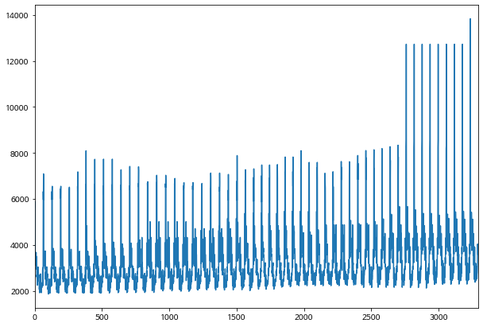
df_seoul = df.loc[df['지역'] == '서울']df_seoul| 지역 | 규모 | 연도 | 월 | 분양가 | |
|---|---|---|---|---|---|
| 0 | 서울 | 60㎡이하 | 2015 | 10 | 5652 |
| 1 | 서울 | 60㎡초과 85㎡이하 | 2015 | 10 | 5882 |
| 2 | 서울 | 85㎡초과 102㎡이하 | 2015 | 10 | 5721 |
| 3 | 서울 | 102㎡초과 | 2015 | 10 | 5879 |
| 64 | 서울 | 60㎡이하 | 2015 | 11 | 6320 |
| 65 | 서울 | 60㎡초과 85㎡이하 | 2015 | 11 | 5964 |
| 66 | 서울 | 85㎡초과 102㎡이하 | 2015 | 11 | 7092 |
| 67 | 서울 | 102㎡초과 | 2015 | 11 | 6551 |
| 128 | 서울 | 60㎡이하 | 2015 | 12 | 6321 |
| 129 | 서울 | 60㎡초과 85㎡이하 | 2015 | 12 | 5966 |
| 130 | 서울 | 85㎡초과 102㎡이하 | 2015 | 12 | 6513 |
| 131 | 서울 | 102㎡초과 | 2015 | 12 | 6551 |
| 192 | 서울 | 60㎡이하 | 2016 | 1 | 6427 |
| 193 | 서울 | 60㎡초과 85㎡이하 | 2016 | 1 | 6036 |
| 194 | 서울 | 85㎡초과 102㎡이하 | 2016 | 1 | 6513 |
| 195 | 서울 | 102㎡초과 | 2016 | 1 | 6551 |
| 256 | 서울 | 60㎡이하 | 2016 | 2 | 6438 |
| 257 | 서울 | 60㎡초과 85㎡이하 | 2016 | 2 | 6039 |
| 258 | 서울 | 85㎡초과 102㎡이하 | 2016 | 2 | 6513 |
| 259 | 서울 | 102㎡초과 | 2016 | 2 | 6458 |
| 319 | 서울 | 60㎡이하 | 2016 | 3 | 6550 |
| 320 | 서울 | 60㎡초과 85㎡이하 | 2016 | 3 | 6127 |
| 321 | 서울 | 85㎡초과 102㎡이하 | 2016 | 3 | 7179 |
| 322 | 서울 | 102㎡초과 | 2016 | 3 | 6371 |
| 380 | 서울 | 60㎡이하 | 2016 | 4 | 6618 |
| 381 | 서울 | 60㎡초과 85㎡이하 | 2016 | 4 | 6196 |
| 382 | 서울 | 85㎡초과 102㎡이하 | 2016 | 4 | 8096 |
| 383 | 서울 | 102㎡초과 | 2016 | 4 | 6353 |
| 445 | 서울 | 60㎡이하 | 2016 | 5 | 6638 |
| 446 | 서울 | 60㎡초과 85㎡이하 | 2016 | 5 | 6205 |
| ... | ... | ... | ... | ... | ... |
| 2819 | 서울 | 85㎡초과 102㎡이하 | 2019 | 7 | 12728 |
| 2820 | 서울 | 102㎡초과 | 2019 | 7 | 8430 |
| 2876 | 서울 | 60㎡이하 | 2019 | 8 | 8223 |
| 2877 | 서울 | 60㎡초과 85㎡이하 | 2019 | 8 | 8562 |
| 2878 | 서울 | 85㎡초과 102㎡이하 | 2019 | 8 | 12728 |
| 2879 | 서울 | 102㎡초과 | 2019 | 8 | 8866 |
| 2935 | 서울 | 60㎡이하 | 2019 | 9 | 8205 |
| 2936 | 서울 | 60㎡초과 85㎡이하 | 2019 | 9 | 8572 |
| 2937 | 서울 | 85㎡초과 102㎡이하 | 2019 | 9 | 12728 |
| 2938 | 서울 | 102㎡초과 | 2019 | 9 | 8972 |
| 2995 | 서울 | 60㎡이하 | 2019 | 10 | 8230 |
| 2996 | 서울 | 60㎡초과 85㎡이하 | 2019 | 10 | 8574 |
| 2997 | 서울 | 85㎡초과 102㎡이하 | 2019 | 10 | 12728 |
| 2998 | 서울 | 102㎡초과 | 2019 | 10 | 8903 |
| 3056 | 서울 | 60㎡이하 | 2019 | 11 | 8196 |
| 3057 | 서울 | 60㎡초과 85㎡이하 | 2019 | 11 | 8300 |
| 3058 | 서울 | 85㎡초과 102㎡이하 | 2019 | 11 | 12728 |
| 3059 | 서울 | 102㎡초과 | 2019 | 11 | 8952 |
| 3116 | 서울 | 60㎡이하 | 2019 | 12 | 8115 |
| 3117 | 서울 | 60㎡초과 85㎡이하 | 2019 | 12 | 8171 |
| 3118 | 서울 | 85㎡초과 102㎡이하 | 2019 | 12 | 12728 |
| 3119 | 서울 | 102㎡초과 | 2019 | 12 | 8989 |
| 3175 | 서울 | 60㎡이하 | 2020 | 1 | 8330 |
| 3176 | 서울 | 60㎡초과 85㎡이하 | 2020 | 1 | 8135 |
| 3177 | 서울 | 85㎡초과 102㎡이하 | 2020 | 1 | 12728 |
| 3178 | 서울 | 102㎡초과 | 2020 | 1 | 8779 |
| 3234 | 서울 | 60㎡이하 | 2020 | 2 | 8193 |
| 3235 | 서울 | 60㎡초과 85㎡이하 | 2020 | 2 | 8140 |
| 3236 | 서울 | 85㎡초과 102㎡이하 | 2020 | 2 | 13835 |
| 3237 | 서울 | 102㎡초과 | 2020 | 2 | 9039 |
212 rows × 5 columns
df_seoul_year = df_seoul.groupby('연도').mean()df_seoul_year| 월 | 분양가 | |
|---|---|---|
| 연도 | ||
| 2015 | 11.0 | 6201.000000 |
| 2016 | 6.5 | 6674.520833 |
| 2017 | 6.5 | 6658.729167 |
| 2018 | 6.5 | 7054.687500 |
| 2019 | 6.5 | 8735.083333 |
| 2020 | 1.5 | 9647.375000 |
df_seoul_year['분양가'].plot(kind='line')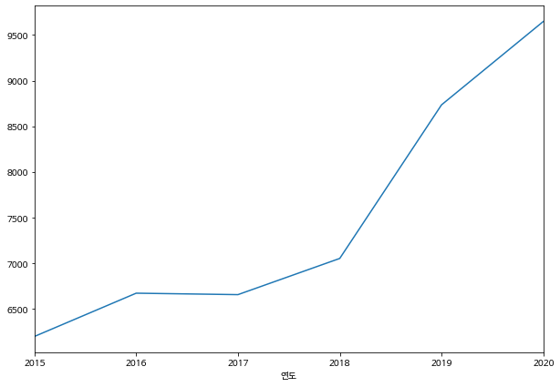
bar 그래프
bar 그래프는 그룹별로 비교할 때 유용합니다.
df.groupby('지역')['분양가'].mean()지역
강원 2448.156863
경기 4133.952830
경남 2858.932367
경북 2570.465000
광주 3055.043750
대구 3679.620690
대전 3176.127389
부산 3691.981132
서울 7308.943396
세종 2983.543147
울산 2990.373913
인천 3684.302885
전남 2326.250000
전북 2381.416268
제주 3472.677966
충남 2534.950000
충북 2348.183962
Name: 분양가, dtype: float64df.groupby('지역')['분양가'].mean().plot(kind='bar')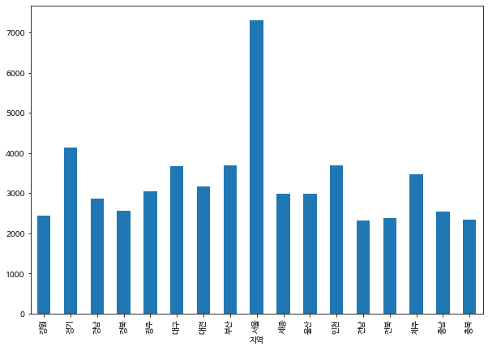
df.groupby('지역')['분양가'].mean().plot(kind='barh')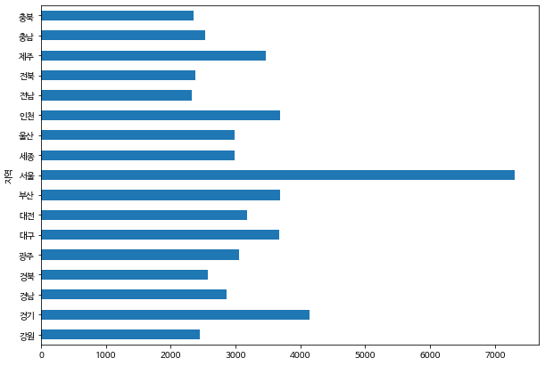
히스토그램 (hist)
히스토그램은 분포-빈도 를 시각화하여 보여줍니다
가로축에는 분포를, 세로축에는 빈도가 시각화되어 보여집니다.
df['분양가'].plot(kind='hist')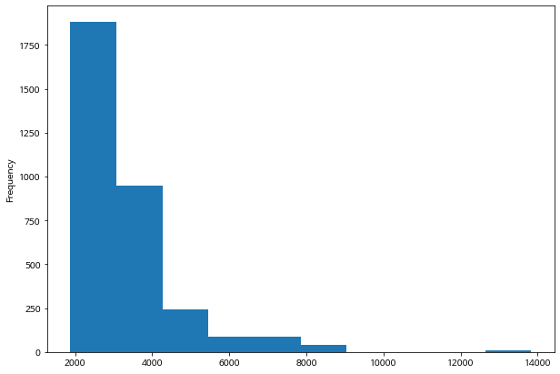
커널 밀도 그래프
- 히스토그램과 유사하게 밀도를 보여주는 그래프입니다.
- 히스토그램과 유사한 모양새를 갖추고 있습니다.
- 부드러운 라인을 가지고 있습니다.
df['분양가'].plot(kind='kde')/home/ubuntu/anaconda3/envs/tensorflow2_p36/lib/python3.6/site-packages/matplotlib/backends/backend_agg.py:211: RuntimeWarning: Glyph 8722 missing from current font.
font.set_text(s, 0.0, flags=flags)
/home/ubuntu/anaconda3/envs/tensorflow2_p36/lib/python3.6/site-packages/matplotlib/backends/backend_agg.py:180: RuntimeWarning: Glyph 8722 missing from current font.
font.set_text(s, 0, flags=flags)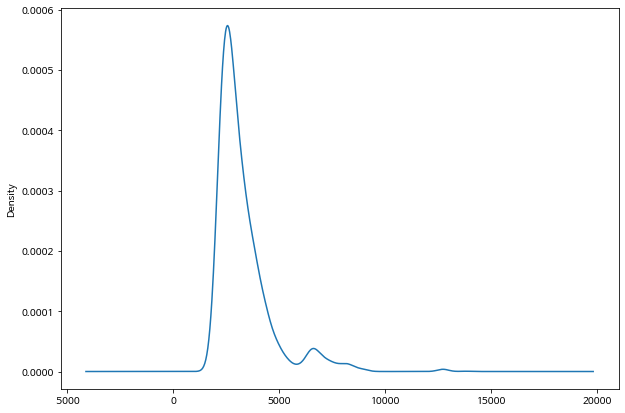
Hexbin
- hexbin은 고밀도 산점도 그래프입니다.
- x와 y 키 값을 넣어 주어야 합니다.
- x, y 값 모두 numeric 한 값을 넣어 주어야합니다.
- 데이터의 밀도를 추정합니다.
df.plot(kind='hexbin', x='분양가', y='연도', gridsize=20)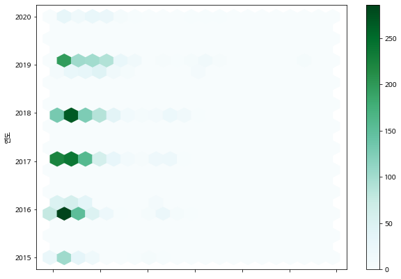
박스 플롯(box)
df_seoul = df.loc[df['지역'] == '서울']df_seoul['분양가'].plot(kind='box')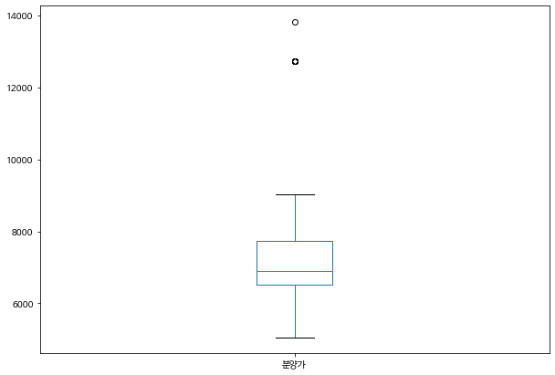
from IPython.display import Image
# image source : https://justinsighting.com/how-to-interpret-box-plots/
Image('https://justinsighting.com/wp-content/uploads/2016/12/boxplot-description.png')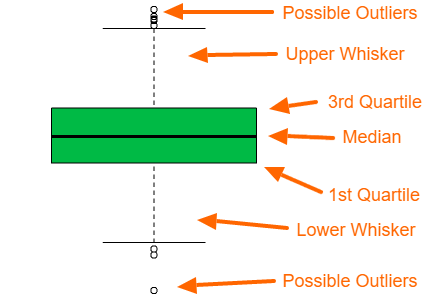
IQR은 Inter Quantile Range의 약어로써, (3Q - 1Q) * 1.5 값입니다.
Pie 그래프
df.groupby('연도')['분양가'].count().plot(kind='pie')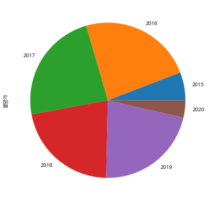
scatter plot (산점도 그래프)
- 점으로 데이터를 표기해 줍니다
- x, y 값을 넣어주어야합니다 (hexbin과 유사)
- x축과 y축을 지정해주면 그에 맞는 데이터 분포도를 볼 수 있습니다.
- 역시 numeric 한 column 만 지정할 수 있습니다
df| 지역 | 규모 | 연도 | 월 | 분양가 | |
|---|---|---|---|---|---|
| 0 | 서울 | 60㎡이하 | 2015 | 10 | 5652 |
| 1 | 서울 | 60㎡초과 85㎡이하 | 2015 | 10 | 5882 |
| 2 | 서울 | 85㎡초과 102㎡이하 | 2015 | 10 | 5721 |
| 3 | 서울 | 102㎡초과 | 2015 | 10 | 5879 |
| 4 | 인천 | 60㎡이하 | 2015 | 10 | 3488 |
| 5 | 인천 | 60㎡초과 85㎡이하 | 2015 | 10 | 3119 |
| 6 | 인천 | 85㎡초과 102㎡이하 | 2015 | 10 | 3545 |
| 7 | 인천 | 102㎡초과 | 2015 | 10 | 3408 |
| 8 | 경기 | 60㎡이하 | 2015 | 10 | 3126 |
| 9 | 경기 | 60㎡초과 85㎡이하 | 2015 | 10 | 3239 |
| 10 | 경기 | 85㎡초과 102㎡이하 | 2015 | 10 | 3496 |
| 11 | 경기 | 102㎡초과 | 2015 | 10 | 3680 |
| 12 | 부산 | 60㎡이하 | 2015 | 10 | 2950 |
| 13 | 부산 | 60㎡초과 85㎡이하 | 2015 | 10 | 2999 |
| 14 | 부산 | 85㎡초과 102㎡이하 | 2015 | 10 | 2957 |
| 15 | 부산 | 102㎡초과 | 2015 | 10 | 3500 |
| 16 | 대구 | 60㎡이하 | 2015 | 10 | 2614 |
| 17 | 대구 | 60㎡초과 85㎡이하 | 2015 | 10 | 2696 |
| 18 | 대구 | 85㎡초과 102㎡이하 | 2015 | 10 | 2557 |
| 19 | 대구 | 102㎡초과 | 2015 | 10 | 2598 |
| 20 | 광주 | 60㎡이하 | 2015 | 10 | 2253 |
| 21 | 광주 | 60㎡초과 85㎡이하 | 2015 | 10 | 2439 |
| 22 | 대전 | 60㎡이하 | 2015 | 10 | 2585 |
| 23 | 대전 | 60㎡초과 85㎡이하 | 2015 | 10 | 2428 |
| 24 | 대전 | 85㎡초과 102㎡이하 | 2015 | 10 | 2461 |
| 25 | 울산 | 60㎡이하 | 2015 | 10 | 2422 |
| 26 | 울산 | 60㎡초과 85㎡이하 | 2015 | 10 | 3040 |
| 27 | 울산 | 85㎡초과 102㎡이하 | 2015 | 10 | 2951 |
| 28 | 울산 | 102㎡초과 | 2015 | 10 | 2690 |
| 29 | 세종 | 60㎡이하 | 2015 | 10 | 2572 |
| ... | ... | ... | ... | ... | ... |
| 3263 | 세종 | 85㎡초과 102㎡이하 | 2020 | 2 | 3510 |
| 3264 | 세종 | 102㎡초과 | 2020 | 2 | 3931 |
| 3265 | 강원 | 60㎡이하 | 2020 | 2 | 2560 |
| 3266 | 강원 | 60㎡초과 85㎡이하 | 2020 | 2 | 2501 |
| 3267 | 강원 | 85㎡초과 102㎡이하 | 2020 | 2 | 3329 |
| 3268 | 강원 | 102㎡초과 | 2020 | 2 | 3906 |
| 3269 | 충북 | 60㎡이하 | 2020 | 2 | 2420 |
| 3270 | 충북 | 60㎡초과 85㎡이하 | 2020 | 2 | 2384 |
| 3271 | 충북 | 85㎡초과 102㎡이하 | 2020 | 2 | 2634 |
| 3272 | 충북 | 102㎡초과 | 2020 | 2 | 2532 |
| 3273 | 충남 | 60㎡이하 | 2020 | 2 | 2389 |
| 3274 | 충남 | 60㎡초과 85㎡이하 | 2020 | 2 | 2622 |
| 3275 | 충남 | 85㎡초과 102㎡이하 | 2020 | 2 | 3201 |
| 3276 | 충남 | 102㎡초과 | 2020 | 2 | 2835 |
| 3277 | 전북 | 60㎡이하 | 2020 | 2 | 2526 |
| 3278 | 전북 | 60㎡초과 85㎡이하 | 2020 | 2 | 2458 |
| 3279 | 전북 | 85㎡초과 102㎡이하 | 2020 | 2 | 2764 |
| 3280 | 전북 | 102㎡초과 | 2020 | 2 | 2667 |
| 3281 | 전남 | 60㎡이하 | 2020 | 2 | 2529 |
| 3282 | 전남 | 60㎡초과 85㎡이하 | 2020 | 2 | 2507 |
| 3283 | 전남 | 102㎡초과 | 2020 | 2 | 3053 |
| 3284 | 경북 | 60㎡이하 | 2020 | 2 | 2578 |
| 3285 | 경북 | 60㎡초과 85㎡이하 | 2020 | 2 | 2549 |
| 3286 | 경북 | 102㎡초과 | 2020 | 2 | 2756 |
| 3287 | 경남 | 60㎡이하 | 2020 | 2 | 2780 |
| 3288 | 경남 | 60㎡초과 85㎡이하 | 2020 | 2 | 3065 |
| 3289 | 경남 | 85㎡초과 102㎡이하 | 2020 | 2 | 3247 |
| 3290 | 제주 | 60㎡이하 | 2020 | 2 | 4039 |
| 3291 | 제주 | 60㎡초과 85㎡이하 | 2020 | 2 | 3962 |
| 3292 | 제주 | 102㎡초과 | 2020 | 2 | 3601 |
3293 rows × 5 columns
df.plot(x='월', y='분양가', kind='scatter')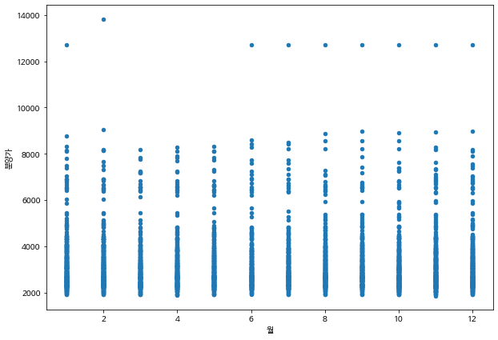